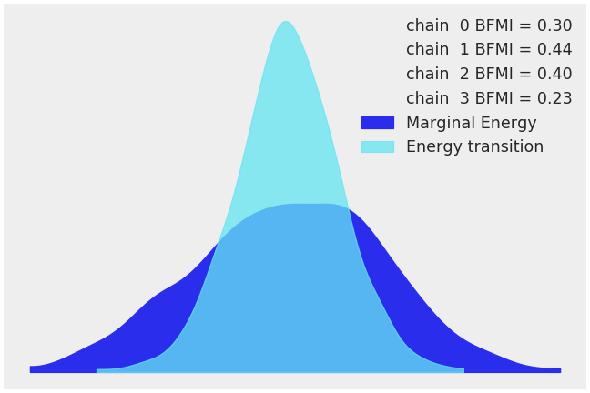
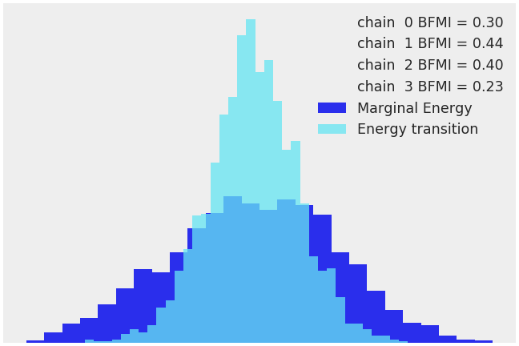

arviz.plot_energy¶
-
arviz.plot_energy(data, kind='kde', bfmi=True, figsize=None, legend=True, fill_alpha=(1, 0.75), fill_color=('C0', 'C5'), bw=4.5, textsize=None, fill_kwargs=None, plot_kwargs=None, ax=None, backend=None, backend_kwargs=None, show=None)[source]¶ Plot energy transition distribution and marginal energy distribution in HMC algorithms.
This may help to diagnose poor exploration by gradient-based algorithms like HMC or NUTS.
- Parameters
- dataxarray dataset, or object that can be converted (must represent
sample_stats and have an energy variable)
- kindstr
Type of plot to display {“kde”, “histogram”)
- bfmibool
If True add to the plot the value of the estimated Bayesian fraction of missing information
- figsizetuple
Figure size. If None it will be defined automatically.
- legendbool
Flag for plotting legend (defaults to True)
- fill_alphatuple of floats
Alpha blending value for the shaded area under the curve, between 0 (no shade) and 1 (opaque). Defaults to (1, .75)
- fill_colortuple of valid matplotlib color
Color for Marginal energy distribution and Energy transition distribution. Defaults to (‘C0’, ‘C5’)
- bwfloat
Bandwidth scaling factor for the KDE. Should be larger than 0. The higher this number the smoother the KDE will be. Defaults to 4.5 which is essentially the same as the Scott’s rule of thumb (the default rule used by SciPy). Only works if kind=’kde’
- textsize: float
Text size scaling factor for labels, titles and lines. If None it will be autoscaled based on figsize.
- fill_kwargsdicts, optional
Additional keywords passed to arviz.plot_kde (to control the shade)
- plot_kwargsdicts, optional
Additional keywords passed to arviz.plot_kde or plt.hist (if type=’hist’)
- ax: axes, optional
Matplotlib axes or bokeh figures.
- backend: str, optional
Select plotting backend {“matplotlib”,”bokeh”}. Default “matplotlib”.
- backend_kwargs: bool, optional
These are kwargs specific to the backend being used. For additional documentation check the plotting method of the backend.
- showbool, optional
Call backend show function.
- Returns
- axesmatplotlib axes or bokeh figures
Examples
Plot a default energy plot
>>> import arviz as az >>> data = az.load_arviz_data('centered_eight') >>> az.plot_energy(data)
Represent energy plot via histograms
>>> az.plot_energy(data, kind='hist')
